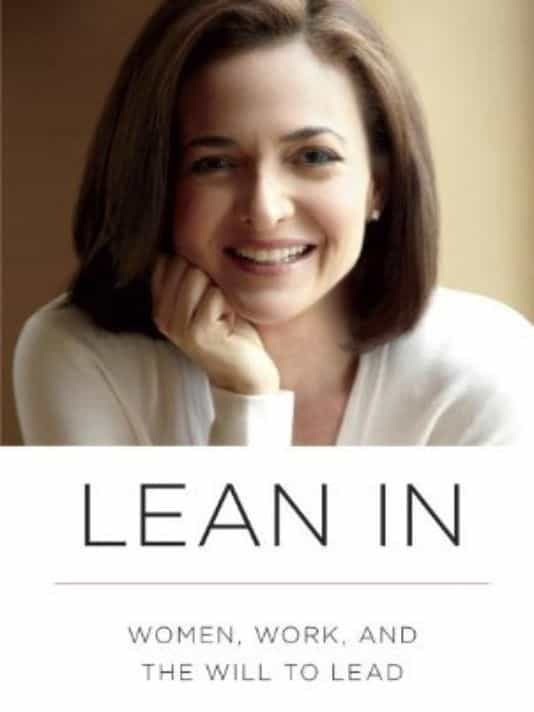

While countless Americans, male and female, attempt to get by week-to-week with their insufficient pay checks, average women have been taught to–or shamed into–feeling happy for women with millions or billions of dollars. Sheryl Sandberg serving as Facebook’s Chief Operating Officer, for example, is meant to be a cause for celebration amongst women cleaners, childcare workers, cashiers, and others who work for something close to minimum wage.
“My success is women’s success!” says a new (but very, very small) generation of female public figures. Books like Sandberg’s Lean In would have you believe that the key to women being happy is watching literally the tiniest proportion of other women ascend to the ranks of corporate chief executives and other board members.
Consequently, one of the biggest con jobs in modern society is the extent to which feminists will focus on gender representation amongst the <0.1% and perhaps <0.01%. Forgetting that the generally lazier male sex dominates high school SAT scores (and also makes up the majority of the mentally challenged), the biggest gender moral imperative of our time is to supposedly increase the number of women running Fortune 500 companies.

“Lean in while I share some horrible stories about my family being booted out of our favorite country club when I was a teen!”
The arrogance that motivates these klaxon calls is astounding. In no way does it alleviate any day-to-day pressures on normal women, including everything from mortgage stress to raising children on only $20,000 per annum. In fact, it only compounds these problems, convincing many that they actually get something out of feeling happy for Sheryl Sandberg and others like her whilst simultaneously robbing them of the energy to challenge and reverse their own mediocre situations.
By hijacking the conversation to make it about “sisterhood” when it’s really about themselves, wealthier women, many of whom already had wealthy childhoods, can avoid questions as to why so many other women are left at the bottom of the socioeconomic totem pole.
How many influential women came from privileged families?
The father of the disastrous ex-Hewlett-Packard CEO Carly Fiorina was an Ivy League law professor. Women with privileged childhoods have been overrepresented in Fortune 500 companies for decades.
It never ceases to amaze me how all women are lumped in together when it comes to talk of gender representation, especially in domains like corporate boards. The socioeconomic backgrounds of many female executives–or other very well-paid women–are typically never raised.
For all the talk by feminists of intersectionality, the idea that white or wealthy women suffer less “oppression” than non-white or poor women, few try to reflect on their own backgrounds or those of their treasured poster girls. Two of the most well-known female executives of recent times, left-leaning Sheryl Sandberg and Republican Carly Fiorina, both came from very financially well-positioned families. Many others hail from similar “ivory tower” pedigrees.
With privileged families having roughly the same number of daughters as sons, the benefits of wealth and social status flow more or less evenly to female children. No one has ever properly explained to me how the daughter of a multimillionaire or well-connected public figure is going to have a harder time in the corporate or professional world than a man from a lower middle-class background with no network. Yet that’s the narrative constantly shoved down our throats, that all women face more barriers than all men, no matter how many trust funds were created or how many $40,000-a-year schools the daughter of the Ivy League professor or Wall Street hedge fund manager attended.
Meanwhile in the real world…
This girl is meant to leap in joy because Sheryl Sandberg and 0.0001% of women have hundreds of millions or billions of dollars, or are on the boards of Fortune 500 companies.
Like dreams of winning the lottery, the media bantering on about female representation on corporate boards or the pushed need for a new Elizabeth Holmes does nothing to help the average woman, let alone the average person or family.
If you want a textbook definition of narcissism, Sheryl Sandberg is it. Inasmuch as I support a generally free market, in no way does the largesse or profile of a Sandberg or Fiorina “trickle down” to the masses of women cleaning our floors, ringing up our groceries, or stocking up our department store shelves.
All of this has nothing to do with common struggles or professional dreams and everything to do with certain individual women’s self-aggrandizement and their desire to create a cult around themselves.
Read More: It’s Becoming Easy For Single Men To “Drop Out” And Live On Minimum Wage